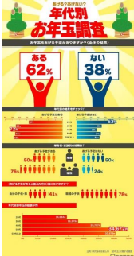

她 們 ， 與 店 ， 與 家
✧女人 的店
本展展出內容 為實地踏查所 得，共計踏查臺 南 36 個行政 區、 35 間雜貨 店，創始者中計 有女性 22 名、 男性 19 名，各 佔 54% 及 46% 男女比例差距 雖不大，然於男 性為工作主力 的傳統社會而 言，女性經營者 擁有過半比例 已屬不易。以目 前主要經營者計算， 有女性 28 名，男性 16 名， 各佔 64% 、 36% 仍以女性經營 者居多，可見女 性於雜貨店中 扮演要角。
--------------------------------------------------------------------------------
✧店裡 的女 人
她們，往往需同 時操持生意經、 料理家庭事；她 們，未接受專業 訓練、甚至目不 識丁的她們，卻 能記清進出貨 的金額、設計商 品的擺放、熟知 客人的喜好、善 用買賣的技巧， 彷若這些是與 身俱來的能力， 無師自通。店裡 與店外的大事 小事由她們運 籌帷幄，公與私 間的待人接物 被她們說得雲 淡風輕，事業、 鄰里與家庭的 多邊關係在她 們手中俐落和 諧。她們，是雜 貨店裡的女人。